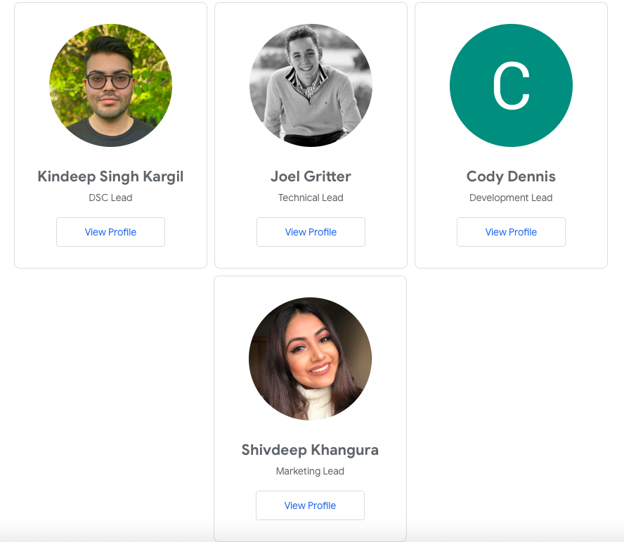

Google Developers Student Club
At Brock University
As the DSC marketing lead, it is my duty to help students meet other students on campus who are also interested in developer technologies. It is also my job to promote workshops and share resources that can help others learn about a wide range of technical topics through sharing events online, that can help apply new learnings, and connections to build great solutions!